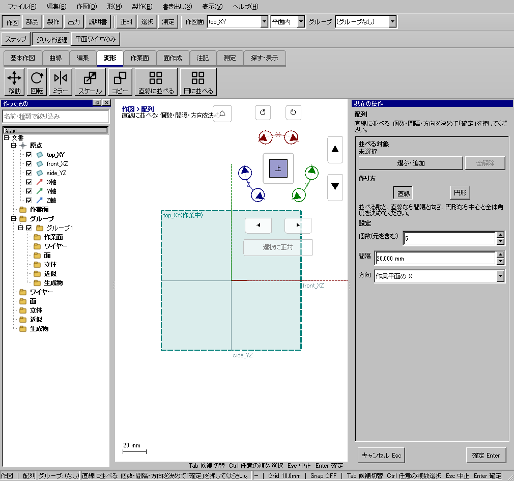
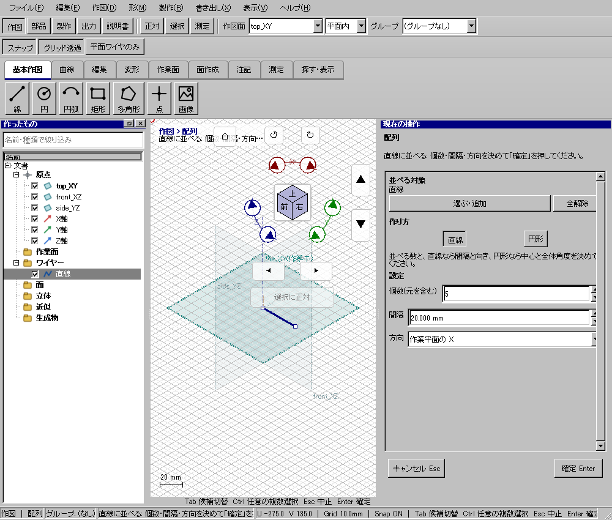
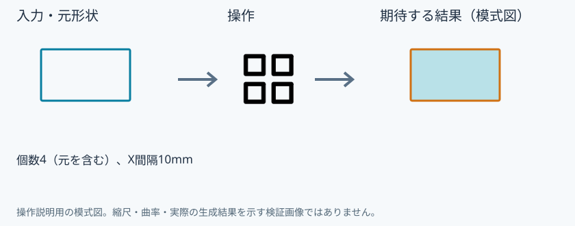

窓輪郭を10mm間隔で4個並べる
使う機能：直線に並べる
元を含む総数を指定し、作業面方向へ等間隔に並べます。4個は元＋コピー3個です。
同じ窓が等間隔に4個並ぶ。
1 準備 — 元の図形から作る
4×6mmの窓輪郭を作る。
まだ用意できていなければ、次の手順を先に行ってください。既にモデルがある場合も、例の座標・大きさ・面の向きを自分のモデルへ読み替えます。
- 幅20・高さ10mmの閉じた矩形を作る — 図形の作成から順に練習できます。
- 線・面・部品を取り違えずに選ぶ — 図形の作成から順に練習できます。
練習前にKCD2を別名保存します。数値の長さはmm、角度は度です。平面内のu/vと世界XYZを区別します。
2 使う道具を開く — 押す場所
- 作図 → 変形 → その他 → 直線に並べる
別の入口：Ctrl+K → 直線に並べるを検索 → 候補の用途を確認して開きます。別モードなら「全モードから探す」をオンにします。


この実画面は既存操作試験の一場面で、下の数値例の完成画像とは限りません。
3 操作手順 — 一つずつ進める
元を一つ作る
窓の閉輪郭を1個作り、top_XYを作業中にします。
画面で確認：複製前の要素の数を確認します。
配列の対象を入れる
配列を開いて直線を選び、元の窓の閉輪郭を全体として指定します。
画面で確認：線の場合は一辺だけを選ばないよう左一覧を使います。
総数を指定する
「個数（元を含む）」へ4を入れます。
画面で確認：元1個と写し3個になる指定です。
配置を数値指定する
間隔10mm、方向「作業平面のX」にします。
画面で確認：現在の作業面の軸と、数値の正負を確認します。
確定して数を確認する
右ペインの確定を押します。全体表示で4個があることを見ます。
画面で確認：10mm間隔の4個です。
修正する
枚数や向きが違ったらCtrl+Zで戻し、条件を直して再実行します。
画面で確認：同じ形が重なる場合は間隔・中心・方向を確認します。
4 設定する欄と数値
ボタン名・欄名と、今回使う値を対応させてください。項目が出ていない場合は作り方・モードが合っているか確認し、ペイン内をスクロールします。
| 見る欄・役割 | この例の設定と意味 |
|---|---|
| 個数（元を含む） | 4 |
| 間隔 | 10mm |
| 方向 | 作業平面のX |
選択の確認：役割欄の名前と3Dの強調を照合します。重なって拾いにくい時はTabで候補を替えます。全体を使う例では左一覧の要素名を選び、3Dの1辺選択と区別します。

5 確定して結果を確認
必要な入力と数値をそろえ、下見と状態欄を確認して、右ペインの作成・適用・確定ボタンを押します。Enter対応の道具はEnterでも確定できます。
同じ窓が等間隔に4個並ぶ。
形を作る操作では、元と結果の名前を分けて一覧で確認し、必要に応じて元を一時非表示にします。表示だけの機能では形状や要素数を変えることが目的ではありません。
6 取消・やり直し・保存
Escで未確定の入力を取り消します。道具を終えるには選択（V）か別の道具へ切り替えます。確定済みの図面変更はCtrl+Z、やり直しはCtrl+Yです。
モデルの編集正本はKCD2、説明書の編集正本はKCIです。外部へ出力するだけの機能では、出力ファイルと編集元を両方残してください。
進めない場合 — 症状から戻る場所を探す
| 起きていること | 確認して直す場所 |
|---|---|
| 5個になると思った | 個数には元を含む |
| 方向が違う | 世界Xではなく現在作業面のXか確認 |
この機能の入力条件：並べる線を1つ以上選んでください。
計算中は処理表示を見ます。失敗が出たら、対象・入力条件を変えずに何度も押すのでなく、案内にある対象と条件を確認します。
参考画面の出典と確認範囲
試験名：HP-AR-01 配列の棚で個数を決めて確定すると並び、1回の取り消しで戻る。試験全体の結果：passed。画像はコマンド呼出し直後で、入力待ち・下見の場合もあります。各段階の完成証拠ではありません。